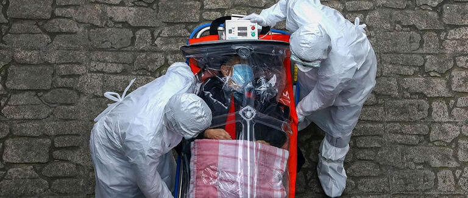
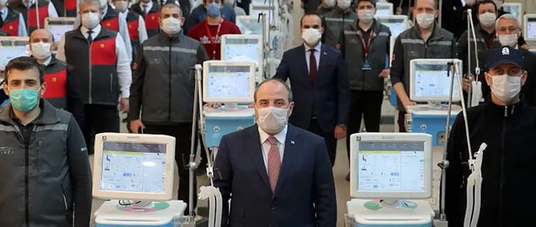
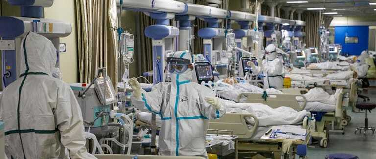

Corona
what is Coronavirus symptoms? and how is it transmitted? how to boost immunity against coronavirus? stay safe and learn with us more in Ilajak medical.

Coronavirus Battle | A Comparison between Turkey and European countries
Corona shatters the global health system and throws patients without treatment
The Coronavirus pandemic has strained the health system worldwide. The rapid increase in demand for health facilities and health-care workers threatens to put some health systems to work beyond their capacity, leaving them unable to carry out their work effectively.
Previous pandemics have demonstrated that when the health system is overwhelmed, the number of deaths from vaccine-preventable diseases, and other treatable conditions, can increase dramatically.
In the years 2014-2015 during the Ebola pandemic, the number of deaths due to measles, malaria, HIV and AIDS, and tuberculosis due to the failure of the health system exceeded the number of deaths from Ebola.
"The best defense against any disease outbreak is a strong health system," stressed WHO Director-General Tedros Adhanom Ghebreyesus. Therefore, COVID 19 reveals the vulnerability of many health systems and services in the world, which is why countries are making difficult choices about how best to meet the needs of their people.
Countries should identify essential services that will be prioritized in their efforts, to maintain continuity in service, and make strategic shifts, to ensure that limited resources provide the maximum benefit to the population.
Check the latest updates: Coronavirus outbreak map around the world and the number of cases

How is the health system measured by the number of beds in hospitals?
Hospital beds are used to indicate the availability of health services to patients. As there is no accurate global standard for determining the number of hospital beds. Therefore, data is collected for the number of beds in hospitals, and by knowing the population in the country, the hospital beds are calculated for every 1000 people from the respective authorities.
In 1960 in Turkey there were 1.70 beds per 1,000 people, while in 2017 the number reached 2.80 per 1,000 people. This indicates the development and strength of the health system in Turkey, unlike the European countries that suffer from a sharp decline in the number of beds in hospitals over the past five decades.
ICU Beds equipped with Ventilators
An intensive care unit or room is a special department in the hospital that provides the highest possible health care and is usually characterized by a ratio of nurses to patients equal to 1: 1 (i.e. a nurse per patient). The intensive care beds are intended for patients with severe and critical conditions, with medical personnel, resuscitation equipment, and a Ventilator.
Hospitals around the world are in urgent need of ventilators, to combat the spread of the Novel Coronavirus. which is spreading at an accelerated pace in the world.
Simply, when COVID-19 disease causes respiratory failure, due to acute inflammation in the lungs, the ventilators takes over the breathing process in the body, and this gives the patient time to fight infection and recovery, and then these devices save the lives of the infected, who suffer from serious complications due to the virus.
It is worth noting that Turkey is one of the first countries to manufacture ventilators`, as it is working on self-sufficiency and helping European countries and the world, while in Europe there is an acute shortage of beds and ventilators, apart from the high cost to be beard by the patients.

Lack of facilities and staff in the medical sectors
Because of the increasing demand for health facilities; the high demand for medical supplies; the World Health Organization has warned that the interruption of personal protective equipment (PPE) puts people at risk of the new coronavirus and other infectious diseases.
Health care workers rely on personal protective equipment to protect themself, their patients from infection, and pass it to others.
However, the lack of these supplies exposes the lives of doctors, nurses, and other medical staff working on the front lines of the risk of COVID-19, due to the difficulty of obtaining basic supplies such as gloves, medical masks, ventilators, goggles, face shield, and medical gown.
The World Health Organization has called on industry and governments to raise production rates by 40% to meet growing global demand.
Turkey is characterized by a huge medical staff with very high experience compared to European countries such as Belgium, where the main problem that affects the life of the Belgian society is the insufficient number of doctors, according to the government’s latest estimates, there is only one doctor for every thousand people.
Overcrowding in some hospitals
Overcrowding appears to be an ongoing problem for many hospitals in the world. This increases pressure on doctors, nurses, and other health professionals, and can also undermine patient access to care, and a negative impact on health outcomes.
The main reason for the overcrowding issue is the mismatch between the beds' supply, the influx of patients, and the increasing demand for health facilities. Another more important reason is inconsistent standards across different hospitals.

People prefer spending a little, and getting better services during difficult times. The essential common services must be guaranteed by each hospital.
In Turkey, due to a large number of hospitals prepared according to the best international standards, like Basaksehir City Hospital it is difficult to get overcrowded, while in European countries, hospitals suffer from the increasing demand pressure leading to overcrowding. Its found in European countries, such as Germany, where they postpone patients' appointments for weeks with no attention to their health condition.
World Health: Turkey is setting an example in the fight against Coronavirus
A WHO official praised Turkey's efforts to combat the coronavirus."Turkey is an exemplary country thanks to its diagnostic capacity and tremendous efforts in treatment in its fight against COVID-19," Pavel Ursu, the WHO's representative for Turkey, said on Twitter.
“On March 11, Turkey became the last major country to report a case of the Coronavirus, and confirmed the first death from the disease on March 17 - for an 89-year-old man,” Urso added.
He continued, "Since then the authorities have tightened restrictions on the spread of the virus, including the closure of unnecessary companies, shopping centers, and travel between cities."
He stressed that: "Turkey is also running this process transparently by sharing accurate case and mortality data electronically".
Turkey's achievements during 18 years in strengthening the health care system
The Ministry of Health of Turkey is always working to improve its status, as a public authority to shape policies, regulate standards, monitor and supervise within the framework of the Health Transformation Program (HTP) that it has been implementing since 2003.
In this process, the Ministry of Health's vision is to direct and facilitate the efficient and fair use of health care resources.
Monitoring the impact on the health outcomes of the Turkish health transformation program is critical for moving forward, to foster successful implementation, and to strengthen weaknesses. The Turkish health transformation program has been developed based on available theoretical knowledge, and recent examples have been concluded from different countries, in a very short time, and it has proven to be a good example of knowledge, competence, and experience with impressive results.
The Turkish Ministry of Health is fighting Corona early and without noise
Turkey has started taking measures immediately through effective cooperation, with all concerned public and private institutions, to prevent the entry, and spread of the disease in the country. We will mention the effective measures later in the article.
Corona's fight proves the success of Turkey's health care system
Turkey has taken many preventive measures and strong steps to prevent the spread of the Novel Coronavirus outbreak, in addition to the strong public health system and generous social assistance plans that have made the country a model for many other countries in combating the threat of the Coronavirus.
One of the most effective measures in controlling the Coronavirus in Turkey is a large number of hospitals and intensive care units per person.
The country also rushed to announce economic support packages, to avoid interruptions in production in general, and the production of ventilators, and health devices in particular, the free distribution of masks, the payment of monthly pensions for the elderly in their homes, and the homeless, which were role models for the whole world.
The closure of the airports was part of the measures that the government worked to take, it first closed its border crossings to countries at risk, and gradually to all neighboring countries, and in the end, it banned all international flights.
Turkey has also returned its citizens from many European countries, and from other regions of the world to their homes after completing the 14-day quarantine procedures in the public dormitories designated for them.
It is worth noting here that Turkey has started taking strict measures, such as closing schools and imposing travel restrictions and public events causing crowds immediately after the first case, while European countries such as Germany, France, Italy, and Spain needed between 39 to 49 days after the first case to take similar measures.
European countries seek medical support from Turkey
Turkey has sent medical aid and supplies to nearly 30 countries in 5 continents, to support the combat of the Coronavirus pandemic.
Supplies such as protective equipment and sterilizers have been sent to European countries, such as Spain, Italy, and the United Kingdom.
In Italy, where the virus mortality rate is very high, officials on April 1 spoke of a Turkish military plane arriving in Italy carrying medical aid. According to a statement issued by the Turkish Ministry of National Defense, the plane took off from its first stop in Madrid, Spain, to Italy. Turkish Medical supplies include masks, protective equipment, and disinfectants.
In Spain, authorities confirmed the arrival of ventilators from Turkey. The Ministry of Foreign Affairs on Twitter shared photos of a plane discharging Medical devices and equipment with the Turkish flag at Barajas airport.
Earlier, the ministry announced that: "150 ventilators from Turkey are already on their way, and they will arrive to Spain and they will be delivered as planned to their final destinations."
In the United Kingdom, officials confirmed the arrival of a Turkish military cargo plane carrying medical supplies for the combat against the Coronavirus pandemic. As the Turkish Ministry of Defense published on Twitter, "At the direction of President Recep Tayyip Erdogan, Turkish Armed Forces aircraft that will transport to the United Kingdom the medical aid supplies prepared by Turkey’s Health Ministry to be used in the fight against COVID-19 has departed Etimesgut/Ankara."
Medical aid supplies were sent with a message to the people of the United Kingdom saying: "After despair, there is a lot of hope, and after dark, there is a brighter sun."
Another military cargo plane with the second batch of medical aid has arrived in the UK, includes protective masks and medical gowns.
The Secretary-General of the North Atlantic Treaty Organization (NATO) Jens Stoltenberg praised Turkey for sending medical aid to Italy and Spain, which is most affected in Europe by the Coronavirus pandemic.
Ilajak Medical© | A passion for care
Source :
Latest Articles, Health News, Clinical Research, and more.
Keratoconus and cataracts , symptoms and types
What is Keratoconus, How it looks and what are the symptoms? Also, find out Keratoconus’s types and stages , Learn more with ILAJAK Medical.
Best Spa Resorts with Medical Services clinics in Turkey.
In this article, we will learn about the importance of health resorts and the treatment services they offer and the top and famous health & medical resorts in Turkey
Zirconia teeth type and costs in Turkey 2021
Zirconia dental crowns and bridges are used to treat and protect the affected teeth due to decay or fractures, etc, In this article we will learn about the advantages and drawbacks of Zirconia Crowns and bridges
Benefits of porcelain teeth and costs in Turkey 2021
Porcelain crowns and veneers are used to strengthen and protect damaged teeth due to decay or cracks or any other reason. In this article, we will discover dental porcelain and its advantages and risks.